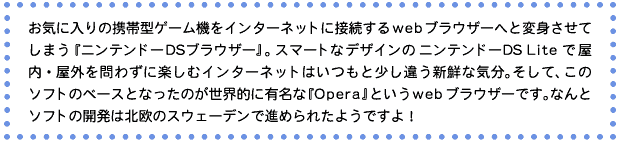
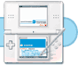

|  |
|  |
| ＮＯＭ：まずは『Opera』というwebブラウザーが世に生まれたキッカケを聞かせてください。 |
| 冨田：会社の設立は1995年で、『Opera』の開発自体はその前からスタートしています。もともと現CEOであるヨン・フォン・テツナーと数名のプログラマーがノルウェーにあるTelenor社という、いわゆる半官半民の電話会社の開発センターに所属しているなかで手がけた1992年頃のプロジェクトが母体でした。当時というのはWorld Wide Web、いわゆるホームページの原始的な仕組みが構築されていった頃でしょうか。 |
| ＮＯＭ：その頃にはどのようなwebブラウザーがあったのでしょうか。 |
| 冨田：『Mosaic』と呼ばれるwebブラウザーが使われていました。その『Mosaic』をターゲットに開発は進められていたのですが、途中でTelenor社が開発継続の興味を失ってしまうのです。『Mosaic』よりも高性能なwebブラウザーの完成に自信を抱いていた開発チームは、そのプロジェクトごとスピンアウトする形で自分達の会社を設立したわけです。 |
| ＮＯＭ：その場合の高性能というのはどういった部分なのでしょうか？ |
| 冨田：性能というよりも根幹となるビジョンの話になるのですが、開発当初から近い将来PCだけではなく色々な機器にインターネットを利用するための通信機能が搭載される時代がくるだろう、ということを思い描いていたようです。そこで『Opera』が他と差別化すべく続けてきた点はプログラムのスリム化とスピード化です。他のブラウザーが最低限インストールして10メガバイト前後であるなかで、『Opera』はずっと3メガバイトぐらいのサイズをキープしています。加えて特定のOS(PCのシステム全体を管理するプログラム)に依存しない独自開発のHTMLレンダリングエンジン(各種データを画面に表示するためのプログラム)を使っているため、色々なOSで使えるという柔軟性を持っていました。 |
| ＮＯＭ：プログラムサイズを小さくするためのポイントというのは？ |
| 冨田：決定的なテクノロジーというものはなくて、やはり小さいことの積み重ねですね。webブラウザーを構成する複数のプログラム間の連携をなるべく簡潔に作って、サイズとスピードの両面でムダをなくしています。あとはOpera Softwareという会社がそれほど大きくなかったというのも良い方向に働いたと思います。各モジュールの担当者が全体を見渡しやすい状況でしたので、個々のモジュールではなく全体をシェイプアップさせるための作業が行いやすかったということです。 |
| ＮＯＭ：なるほど。そしてプログラムの検証を重ねていくわけですね。 |
| 冨田：『Opera』の最新版はver.9.0になるのですが、じつは10年前のPCでも動作検証を行っています。ハードウェアの性能が低いPCの場合、プログラムが効率的に作られていないとスムーズに動いてくれません。より過酷な環境で検証を進めることで、快適に動くwebブラウザーを作り続けることができています。 |
| ＮＯＭ：現在世界中でどのくらいの人が『Opera』でインターネットを楽しんでいるのでしょうか？ |
| 冨田：デスクトップPC用では1995年以降の累計で約3000万人以上のユーザーさんにお使い頂き、モバイル機器では世界中で多くの携帯電話に『Opera』が搭載されています。 国内の携帯電話でも多くの機種に『Opera』が搭載されているんですよ。 |
| ＮＯＭ：webブラウザーの会社としてターニングポイントとなったのは？ |
| 冨田：今回の『ニンテンドーＤＳブラウザー』に関連していえば、2000年に携帯電話で初めてモバイル版の『Opera』を搭載したことでしょうか。それまでマルチプラットフォームで使えるデスクトップPC用のwebブラウザーとして開発をしていたのですが、そこに非PCであるモバイル機器にもwebブラウザーを提供していくという流れが加わっていきました。 |
| ＮＯＭ：その当時からモバイル版は表示される情報量の多いフルブラウザーだったのですか？ |
| 冨田：いえ、そうではありませんでした。当時の携帯電話は画面上に表示できる情報量も少なく、CPUのパワーも弱い。加えてキーボードやマウスのような優れた入力装置もありませんでした。そのためwebブラウザーで閲覧できるコンテンツをシンプルな構成にして、通信システムへの負担軽減と使いやすさをめざすのが主流でした。 |
| ＮＯＭ：なるほど。つまり携帯電話専用のコンテンツを扱うシステムですね。 |
| 冨田：ただ、携帯電話の性能や通信環境も年々アップしてきて色々な可能性が見えてきました。『Opera』としては、画面の小ささといったモバイル機器の物理的な制限を、コンテンツの内容に転化するのではなく、ブラウザー側の技術力で受けとめることができないかと模索を続けていました。その過程で生まれたのが2003年に登場した『スモールスクリーンレンダリング』という技術です。 |
| ＮＯＭ：『ニンテンドーＤＳブラウザー』でも『縦長モード』の表示で使われていますよね。ＤＳの画面にあわせて色々なホームページがスムーズに収まっているのには驚かされます。 |
| 冨田：デスクトップとモバイルの間にあったインターネット環境の垣根を取り払う流れを作ることができたと思っています。ここ数年でハードウェアの性能面はもちろんですが、ユーザーさんの考え方も変わってきていると感じますね。以前はデスクトップとモバイルのネット環境は別物と捉えていたのが、最近はデスクトップで見ているのと同じ内容のコンテンツをモバイル機器でも見たいという意識が高まっているようです。 |
| ＮＯＭ：スモールスクリーンレンダリングはどのようにして可能になっているのですか？ |
| 冨田：これはデスクトップ版でも実装されている機能なので、このノートPCで実演してみましょうか（取材陣、冨田さんの周囲に集まってくる）。このようにブラウザーのスクリーンの横幅を変えていくと、その幅に応じて一番見やすいレイアウトを構成し直していくわけです。携帯電話の画面くらいまでにスクリーン幅を狭くすると、特定の条件を満たす画像については表示しないという処理も行います。 |
| ＮＯＭ：わっ。リアルタイムでどんどんレイアウトが変わっていきますね。 |
| 冨田：インターネット上のホームページというのはHTMLというプログラム言語で記述されていて、その中に画像やテキストをどこにどう配置するか、ということが書かれています（さきほどのホームページがHTMLコードの表示画面に切り替わる）。webブラウザーはそれを解析して各種データをコードどおりに表示しているにすぎません。『Opera』ではその際にスクリーンのサイズによってレイアウトを変えるアルゴリズムを無数に組み込んであるのです。このアルゴリズムですが、大枠の部分はウェブテクノロジーを論理的解釈して作られているのですが、じつはアナログな作業の蓄積も大きな役割を担っています。世の中にある様々なホームページを閲覧しながら、元々想定されているレイアウトを変更しても、問題なくそのホームページの情報を理解することができる変換パターンを考案していったわけです。『ニンテンドーＤＳブラウザー』はディスプレイの大きさからPDAや携帯電話に近いアルゴリズムが採用されています。 |
| ＮＯＭ：『ニンテンドーＤＳブラウザー』がメモリー拡張カートリッジとペアで利用するスタイルはいかがですか。 |
| 冨田：インターネットを楽しむにはホームページから画像やテキストなどの情報コンテンツをダウンロードして表示することになります。このとき情報コンテンツのデータをメモリーに一時的に保存することで同じページの再表示などがスピーディーに行えるわけです。それをニンテンドーＤＳ本体のメモリーだけで利用していたら、ブラウザーとして動作はするけど画像の多いホームページを見る際などに少しストレスを感じたかもしれません。 |
| ＮＯＭ：容量的にどのくらいの余裕が生まれたのでしょう？ |
| 冨田：モバイル版として画像やテキストの表示に関しては、ほぼ問題なしといえるほどのスペースが確保できています。最近の携帯電話でもダウンロードしたコンテンツを置いておける作業用メモリーでこれだけの容量が使えるものはないと思いますね。GBA用スロットにメモリー拡張カートリッジを挿して使うという仕様が出てきた時にはスウェーデンにいる開発チームも小躍りするほど喜んでいました。webブラウザー自体の容量を小さくすると『Opera』ならではの機能をトレードオフする必要があったはずなので。せっかくユニークな機能を持つハードウェアでの挑戦なのに、それはもったいないという声が多く出ていたんです。 |
| ＮＯＭ：画面のデザインはデスクトップ版とは少し違った雰囲気ですよね。 |
| 冨田：画面デザインやそれに伴う操作用アイコンのデザインなどは、任天堂と共同で開発しました。我々もPCや携帯電話、デジタルTVなど色々なプラットフォーム向けにwebブラウザーを作ってきてノウハウはあったのですが携帯型ゲーム機は初めての経験です。たとえば拡大画面と縮小画面という別の比率で表示された画面を上下に並べる今回の大きな特徴となった部分から、アイコンデザインとそれをタッチ操作したときの効果音やエフェクトなどの細かいところまで、任天堂からさまざまなフィードバックを受け取っています。思い返せばスムーズに開発が進んだというよりも、ディスカッションを重ねて少しずつ完成に近づいていったという印象です。 |
| ＮＯＭ：携帯電話の『Opera』と最も異なる点はどこでしょうか？ |
| 冨田：なんといってもタッチスクリーンという点が大きいですね。携帯電話は操作に使うキーに限りがあります。もちろん、その限られた環境のなかで使いやすさを追求しているのですが、ニンテンドーＤＳの場合はタッチスクリーンという時点で圧倒的に操作の自由度が広がります。また同じタッチスクリーンというとPDAもあるのですが、あちらはビジネスユーザーというモバイル上級者中心のマーケットへ向けて提供されているものです。その意味でも『ニンテンドーＤＳブラウザー』では、年配の方やお子さんでも直感的に操作できるような操作用アイコンなどのデザインや配置を心がけました。 |
| ＮＯＭ：webブラウザーというとセキュリティ面も気になります。 |
| 冨田：セキュリティに関しては色々な考え方があるのですが、まずはインターネットを利用している時に、現在安全性の低いホームページに接続中だという事実を明確にアナウンスすることが大切だと思います。ただし、そこでアナウンスをしたからといって、そのあとに起こることはユーザーさんの自己責任にするわけではなく、ブラウザー側でブロックできるものは極力おさえる。その意味でも『Opera』ではデスクトップ版もふくめて初期設定を安全寄りにしています。リスクが理解できる人は設定を変更してくださいというスタンスですね。そして、これらは有害と指定したホームページを閲覧できないようにするコンテンツフィルターと組むことでより強固になる。ＤＳブラウザーでは『i-フィルター』というコンテンツフィルターがいち早く対応しています。 |
| ＮＯＭ：『ニンテンドーＤＳブラウザー』の使用シーンをどんな風にイメージしていますか？ |
| 冨田：家のリビングでリラックスしているときに使うなんてどうでしょうか。携帯電話は外出先で簡単なサイトをチェックするには適した優れたデバイスですが、家にいるときには物足りない画面サイズなので、PCを立ち上げてしまう。ただ、PCでサイトを見る場合は、起動に時間がかかるし、しばらくPCの前に座らないといけない。だけど『ニンテンドーＤＳブラウザー』なら画面もある程度大きいし、PCよりもすばやく立ち上がる。行動範囲を制限する通信ケーブルをつなげる必要もない。いわば携帯電話とデスクトップPCの中間のポジションといえるかもしれません。 |
| ＮＯＭ：リラックスしながらインターネットっていいですね。 |
| 冨田：ニンテンドーＤＳ本体のデザインが素敵なので家のなかでも持ち運びたくなる。他にもリビングから足を伸ばしてベッドのなかや、ちょっと意外なトイレのなかでもインターネットの楽しさを味わってもらえればと思います（笑）。なにより簡単にインターネットに接続できるので、PC初心者の方にもオススメです。お子さんが使うなら多機能な辞書代わりにも活用できると思いますよ。 |
| ＮＯＭ：いやー、すごい時代です。今日はありがとうございました！ |
|